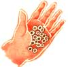
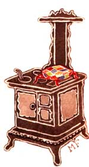
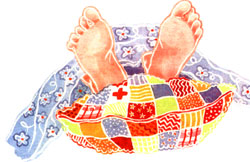

SUNDAY AFTERNOON
Life is a bowl of cherries, but keeping your bed warm can be the pits.
THE UNHEATED BEDROOM IS NO LONGER JUST a thing of the past. Getting under the covers can be a chilly proposition now that more people are heating their homes with wood and relying less on central heating systems.
Children in Switzerland have long been accustomed to a certain household ritual on winter evenings:
Cherrystone pillows are popped into the kitchen's warming oven, and at bedtime each family member retrieves a pillow on his or her way to bed. The warmers work wonderfully for taking the chill off cool sheets in unheated bedrooms.
Cherrystone pillows could be the perfect bed and foot warmer. 'All three times the heating capacity of pebbles, and a much lower conductivity, cherry pits provide steady warmth for winter nights. With a little faithful collecting, a bit of scrap fabric, and a Sunday afternoons time, one of Mew bed warmers could save you many nights of cold-cover shivers.
It takes about 15 pies' worth of pits to make one pillow. If your family doesn't consume a large amount of cherries, you may want to head to a cannery, where you can get pounds of pits for pennies. Cherrystones must be thoroughly cleaned and dried before they can be sewn into pillows.
First, place the pits in a large pan or in the kitchen sink and cover completely with cold water. Then rub and squeeze the stones together to loosen any remaining pulp. When that's done, rinse and repeat the process several times.
Once the cherry seeds look clean, simmer them in a pot of water-stirring occasionally-for about 15 minutes. Then dump the cooked stones into a sinkful of cold water and rub them again. Rinse the cherry pits a few more times (it's absolutely essential to remove all the pulp) before draining and placing them on clean dish towels to dry. You can finish the dehydration process by spreading the pits in one layer across a shallow pan and baking them in a warm oven.
Stir them now and then so they'll dry thoroughly. The pits will be evenly colored when "done" and can then be stored indefinitely in jars, plastic bags, or paper sacks until you're ready to make your bed warmers. (The last are the best choice, because they'll absorb my moisture to tiny mill be present.)
To make the pillowcases, use a sturdy material, such as denim, sailcloth, or drapery fabric. (Avoid any kind of synthetic material that might melt when exposed to heat.)
Cut two rectangles measuring 8" X 11" or use a single 16" X 11" piece. Put the pieces together face to face-or fold the double-size rectangle in half-and stitch around the edges, leaving an opening large enough to let you turn the bag right side out. Finally, fill the sack with the dried cherrystones (keeping it loosely packed) and sew up the hole. You're ready for the next nippy night. To use the bed warmers, begin by heating the pillows in either an oven set to a very low temperature, in front of the fireplace, or over a woodstove. With any of these methods, take care that the warmers are not exposed directly to a glowing (wen element or an open flame that might ignite the fabric. When the cushions are toasty warm, take them immediately to your bedroom and place in bed between the cold sheets. By the time you're ready to turn in, your bedding temperature should be just about right.
|
|
 |
|
|
 |
 |
|